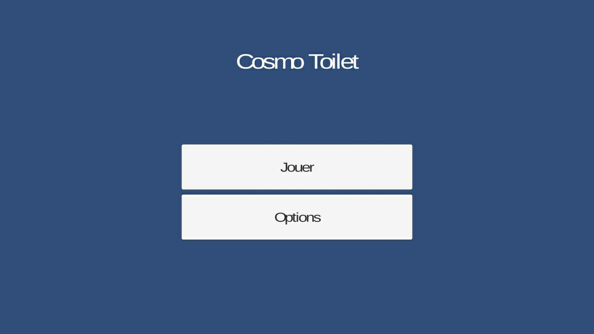

I]Introduction
Maintenant que nous avons défini les tâches à faire, nous allons pouvoir commencer. Le but de cette partie du processus est de réaliser une version du jeu très simpliste qui va permettre de tester toutes les fonctionnalités prévues pour notre jeu. Pour ce faire nous allons utiliser Unity, un moteur de jeu qui facilite grandement le développement [voir présentation du logiciel]. Pour continuer, nous allons nous baser sur le cahier des charges de la première page. Mais avant de passer à la conception, laissons place à la théorie. Qu'est-ce que nous devons réellement faire ?
II]Théorie
Tout d'abord intéressons nous aux déplacements du joueur, sa mobilité principale est le "saut" et est effectué lorsque l'utilisateur clique sur son écran. Pour que notre personnage puisse sauter, il faut que l'on considère l'écran comme un repère en 2D d'axes X et Y. La position sur l'axe X du joueur va être modifiée à chaque clic pour qu'il puisse se déplacer verticalement.

Pour ce qui est des obstacles, il va falloir faire apparaître ces derniers en plusieurs points différents à des intervalles de temps aléatoires et modifier leurs positions dès leurs apparitions. Pour cette fois, ces objets se déplaceront de manière horizontale. Eh oui ! Ce n'est pas le joueur qui se déplace, mais les obstacles ! Les mouvements du joueur horizontaux ne seront qu'une impression.

La destruction de ces obstacles sera nécessaire à chaque fois que ces derniers ne sont plus visible à l'écran. Inutile d'ordonner à ces objets de faire un quelconque mouvement si le joueur ne les voient plus, cela nous évitera les sacades et les pertes d'images par secondes. Lorsque les obstacles entreront en collision avec un objet précis ("barrière" sur le schema) ils seront détruits, on profitera de chaque destruction pour augmenter le score de notre joueur d'1 point.

Pour le reste des fonctionnalités, il suffira d'utiliser les possibilités qu'offre Unity. Nous pourrons aisément créer des boutons, activer ou désactiver des élements en fonction des choix de l'utilisateur.
III]Conception
Bien ! Nous savons dorénavant ce que nous devons faire, voyons maintenant comment cela se passe dans le moteur Unity. Nous ne présentons ici que les tâches qui nous semblent les plus intéressantes, la création des menus et des boutons ne sont pas abordés, car cette tâche est aisément faite avec les possibilités qu'offre le moteur. Il nous faut beaucoup trop de place pour tout présenter.
Pour pouvoir répondre au premier besoin, nous allons créer un objet "joueur" auquel on va attacher un "RigidBody2D". Ce qui permettra à notre "joueur" d'être soumis à la Physique du moteur, il sera alors affecté par la gravité et nous pourrons lui appliquer les forces que nous souhaitons.

A partir de ce moment nous pouvons faire "sauter" notre joueur. nous allons alors lui ordonner d'augmenter sa vitesse verticalement, en modifiant sa vélocité à chaque clic:

Ca y est, notre joueur peut sauter ! C'est le moment de faire appraître nos obstacles. Pour ce faire nous allons créer plusieurs points d'apparitions pour ces derniers:

Et nous allons pouvoir faire apparaître nos obstacles en ces points. Il suffira d'utiliser une "Coroutine", une fonction spéciale qui est capable de mettre son exécution en "pause" sous certaines conditions et qui peut la reprendre là où elle était à son arrêt:

La destruction des obstacles se fera simplement, en vérifiant si un objet entre en contact avec la barrière prévue à cet effet. Si c'est le cas, ce dernier sera détruit automatiquement:

Voici comment cela se passe au niveau du code:

Le procedé sera le même pour détecter si un obstacle est entré en contact avec le joueur. On pourra alors donner deux états à ce dernier: La vie et la mort, dans une variable booléenne. En fonction de sa valeur, nous pourrons faire apparaître l'écran "game-over". Après l'ajout de quelques boutons et quelques détails, notre prototype ressemble aux images qui défilent en haut de page.